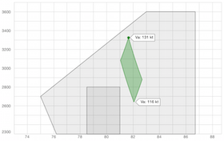

Weight & Balance
The E6B application includes a weight and balance calculator that allows you to enter the weight and arm for your airplane, fuel, passenger and equipment, and verify that your aircraft's weight and balance are within it's carrying capacity.
The weight and balance calculator includes a number of pre-defined aircraft, as well as the ability to create your own aircraft template by copying an existing aircraft, or by creating one from scratch.
Weight and balance calculations are stored in your device's memory. You can then duplicate an existing calculation or create a new one from scratch, and quickly enter the weight at different stations to quickly calculate your aircraft's weight and balance.
Weight and balance results are both numerically provided for the maximum weight and balance, and also are graphically displayed--including a graphical representation of the region of all possible weight/arm combinations as fuel burns down, so you can make sure you stay properly balanced. On the graph the Va maneuvering speed is also calculated and presented for the loaded weight and for the fuel empty weight of the aircraft.
